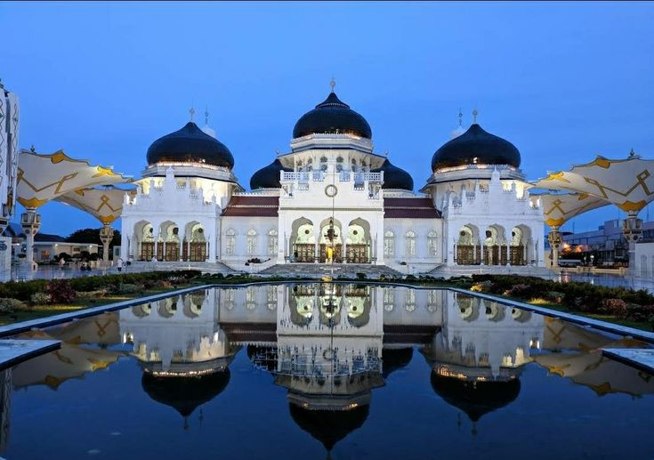
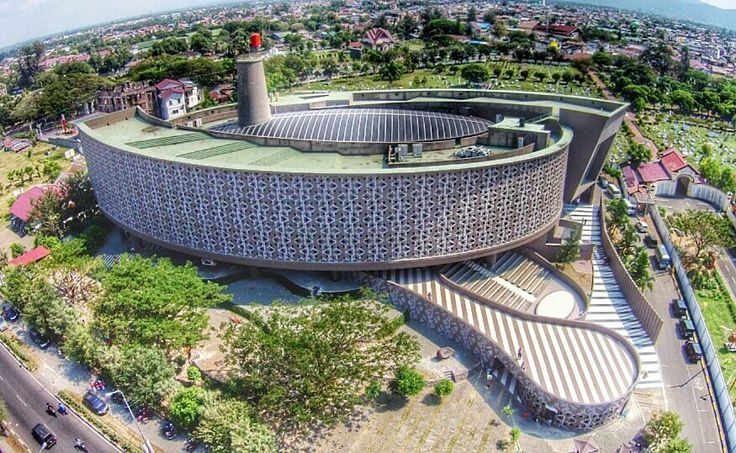
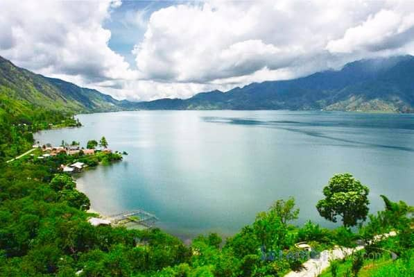

Destinasi Wisata
Sejarah, alam, dan pantai yang bisa kamu kunjungi di Aceh.

Sejarah & Religi
Masjid Raya Baiturrahman
Masjid kebanggaan Aceh dengan kubah hitam dan halaman luas, dibangun pada masa Sultan Iskandar Muda.

Sejarah & Edukasi
Museum Tsunami Aceh
Mengenang tsunami 2004 sekaligus belajar mitigasi bencana lewat lorong gelap, ruang doa, dan dinding nama korban.

Sejarah
PLTD Apung
Kapal pembangkit listrik raksasa yang terseret tsunami ke daratan dan kini menjadi monumen bencana.

Bahari
Pulau Weh & Sabang
Pulau di ujung barat Indonesia dengan snorkeling dan diving yang jernih, serta Tugu Nol Kilometer.

Alam
Danau Lut Tawar
Danau pegunungan berudara sejuk di dataran tinggi Gayo, cocok untuk bersantai dan naik perahu.

Pantai
Pantai Lampuuk
Pantai berpasir putih dengan ombak untuk berselancar, ramai saat sore untuk melihat matahari terbenam.